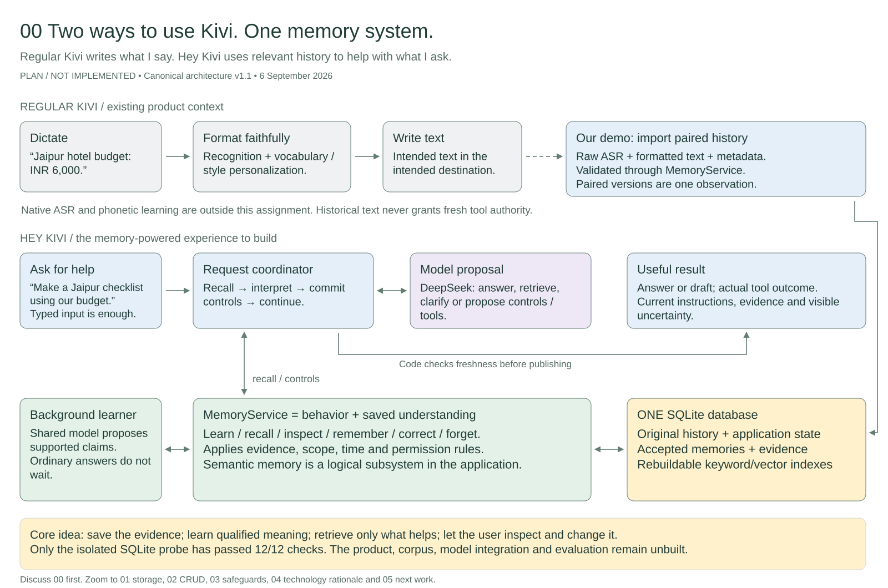

00 · Two ways to use Kivi. One memory system.

Planned architecture; application implementation pending. Open an individual image for full-size reading. Use the .excalidraw download for editing.
Start with the overview; open details when the discussion needs them. The downloadable board is editable in Excalidraw.

Planned architecture; application implementation pending. Open an individual image for full-size reading. Use the .excalidraw download for editing.